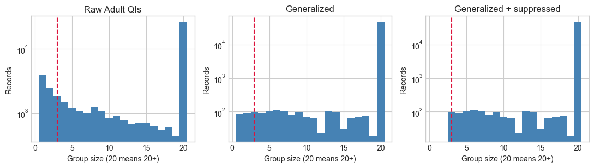
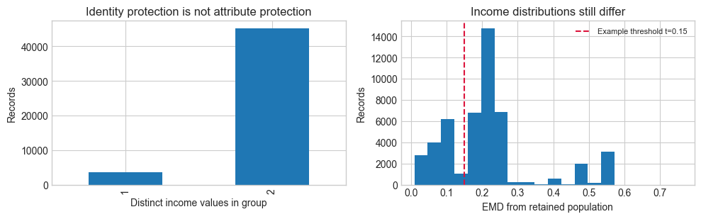
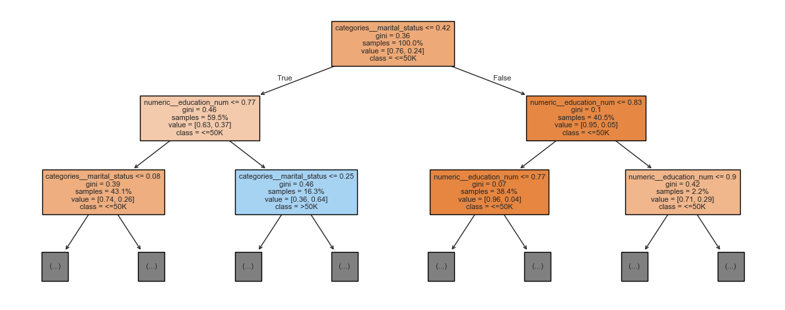
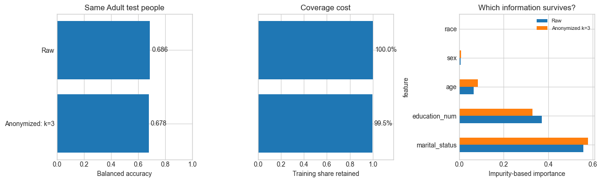
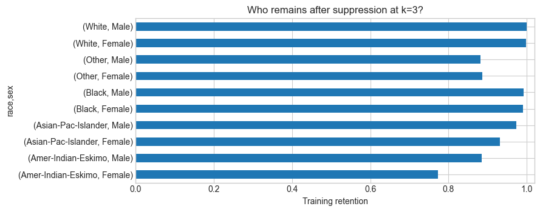
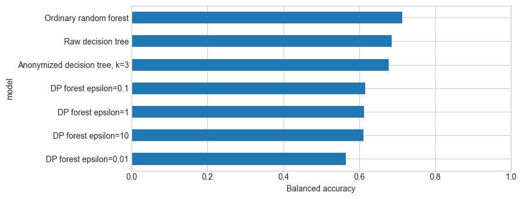
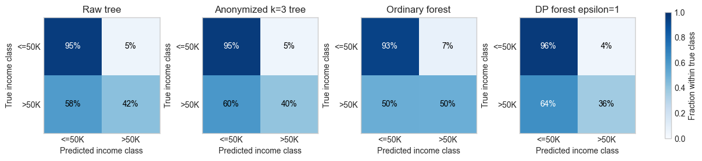

| age | workclass | fnlwgt | education | education_num | marital_status | occupation | relationship | race | sex | capital_gain | capital_loss | hours_per_week | native_country | income | |
|---|---|---|---|---|---|---|---|---|---|---|---|---|---|---|---|
| 0 | 39 | State-gov | 77516 | Bachelors | 13 | Never-married | Adm-clerical | Not-in-family | White | Male | 2174 | 0 | 40 | United-States | <=50K |
| 1 | 50 | Self-emp-not-inc | 83311 | Bachelors | 13 | Married-civ-spouse | Exec-managerial | Husband | White | Male | 0 | 0 | 13 | United-States | <=50K |
| 2 | 38 | Private | 215646 | HS-grad | 9 | Divorced | Handlers-cleaners | Not-in-family | White | Male | 0 | 0 | 40 | United-States | <=50K |
| 3 | 53 | Private | 234721 | 11th | 7 | Married-civ-spouse | Handlers-cleaners | Husband | Black | Male | 0 | 0 | 40 | United-States | <=50K |
| 4 | 28 | Private | 338409 | Bachelors | 13 | Married-civ-spouse | Prof-specialty | Wife | Black | Female | 0 | 0 | 40 | Cuba | <=50K |
Privacy-Aware AI
Data-Centric AI (Module II)
Matteo Francia
DISI — University of Bologna
m.francia@unibo.it
DISI — University of Bologna
m.francia@unibo.it

Session plan: theory and coding
| Activity |
|---|
| Theory 1: Record linkage, k-anonymity, generalization, suppression, and Adult audits |
| Coding 1 (~15 min): Exercises 1 and 2 |
| Theory 2: l-diversity, t-closeness, decision-tree utility, and retained-group coverage |
| Coding 2 (~15 min): Exercises 3 and 4 |
| Theory 3: Membership inference, differential privacy, forest budgets, and privacy/utility comparisons |
| Coding 3 (~15 min): Exercises 5 and 6 |
Why database privacy is hard
Census-income tables contain demographic combinations that can point back to individuals (Sweeney 2002; Jin et al. 2023).
However, the privacy problem is not only “who is this?”
| Disclosure type | What goes wrong | Example question |
|---|---|---|
| Identity disclosure | A person is linked to a record | Which row belongs to this person? |
| Attribute disclosure | A sensitive fact is inferred | Does this person earn more than $50K? |
- Identity disclosure often leads to attribute disclosure
- Attribute disclosure can happen even when identity remains uncertain.
- Releasing data is useful, but replacing names with numbers rarely makes people anonymous (Fung et al. 2010).
Identifiers come in layers
| Type | Examples | Privacy role |
|---|---|---|
| Direct identifiers | Name, phone, address, identification number | Identify directly |
| Quasi-identifiers | Age, education, marital status, race, sex | Can identify through combinations or linkage |
| Sensitive attributes | Income, racial or ethnic origin | Facts whose disclosure can harm someone |
- GDPR (EU): Articles 4 and 9; Recital 26. Personal data include direct and indirect identification; pseudonymized data remain personal when re-identification is possible. Health and racial/ethnic origin are special categories; income alone is not an Article 9 category.
- HIPAA (US health information). De-identification uses Expert Determination or Safe Harbor, which requires removing specified identifiers and meeting its additional conditions.
- CCPA, amended by CPRA (California). Personal information includes data reasonably linkable to a consumer or household; sensitive personal information is a defined subset.
What can an attacker know?
An attacker rarely starts from zero.
| Prior knowledge | How it helps |
|---|---|
| Public records | Links age, education, marital status, and demographic facts |
| Social media | Reveals education, occupation, relationships, and family details |
| Domain knowledge | Makes some sensitive values more or less plausible |
| Other releases | Enables comparison across time or across datasets |
Privacy models are assumptions about which attacks we are trying to limit.
Attack: record linkage
| Outside knowledge | Released Adult record |
|---|---|
| Age 31, education level 10, Married-civ-spouse, White, Male | The same QIs together with income >50K |
- An attacker knows a person’s age, education, marital status, race and sex from outside sources.
- A released income table contains those same columns (Sweeney 2002; Fung et al. 2010).
- If that combination identifies only one record in the release, knowing the person’s QIs links them to the income label.
Group records that share the same quasi-identifiers
Choose the quasi-identifiers (QIs): the columns an attacker might know about a person.
- A QI group is a group of records with identical values in all displayed QI columns.
- The group’s size is the number of matching records.
If five records share the same displayed age, education, marital status, race and sex, they form one group of size 5. Their income labels may differ: income is the sensitive attribute, not part of the grouping key.
Definition: \(k\)-anonymity
\(k\) is the chosen minimum number of matching records in each group; for example, choose \(k = 3\).
A released table is \(k\)-anonymous with respect to chosen quasi-identifiers if every QI group contains at least \(k\) records (Sweeney 2002).
\[\forall E,\quad |E|\geq k.\]
The table’s achieved \(k\) is its smallest group size, not its average group size.
- What is checked? The number of records sharing each displayed QI combination.
- Example: group sizes 3, 5 and 8 satisfy \(k = 3\). Sizes 2, 5 and 8 do not.
- \(k = 1\) requirement provides no meaningful anonymity guarantee.
Adult dataset
Adult: choose the privacy roles before computing \(k\)
| Role | Columns in this lesson |
|---|---|
| Quasi-identifiers | ??? |
| Sensitive target | ??? |
Adult: choose the privacy roles before computing \(k\)
| Role | Columns in this lesson | Why? |
|---|---|---|
| Quasi-identifiers / model inputs | age, education, marital status, race, sex | A person may be linkable through a combination of demographic values |
| Sensitive target | income above or below $50K | The prediction task and the fact an attacker may infer |
- A \(k\)-anonymity claim is relative to the declared QIs.
- Income is not included in the grouping key.
| age | education_num | marital_status | race | sex | income | |
|---|---|---|---|---|---|---|
| 0 | 39 | 13 | Never-married | White | Male | <=50K |
| 1 | 50 | 13 | Married-civ-spouse | White | Male | <=50K |
| 2 | 38 | 9 | Divorced | White | Male | <=50K |
| 3 | 53 | 7 | Married-civ-spouse | Black | Male | <=50K |
| 4 | 28 | 13 | Married-civ-spouse | Black | Female | <=50K |
income
<=50K 0.761
>50K 0.239
Name: income_share, dtype: float64Adult excerpt: nine real records before generalization
| Age | Education level | Marital status | Race | Sex | Income |
|---|---|---|---|---|---|
| 30 | 10 | Married-civ-spouse | White | Male | <=50K |
| 35 | 11 | Married-civ-spouse | White | Male | <=50K |
| 31 | 10 | Married-civ-spouse | White | Male | >50K |
| 28 | 10 | Divorced | White | Female | <=50K |
| 20 | 10 | Never-married | White | Female | <=50K |
| 24 | 9 | Divorced | White | Female | >50K |
| 28 | 10 | Divorced | Black | Female | <=50K |
| 23 | 11 | Never-married | Black | Female | <=50K |
| 22 | 10 | Never-married | Black | Female | <=50K |
- Every displayed five-QI combination is unique within the excerpt: its minimum group size is 1.
- Names are absent, but that alone does not provide anonymity.
Generalize the same nine Adult records
Replace
- exact ages with 10-year bands,
- education with four-level bands and
- marital status with married / not married.
Keep race, sex and income.
| Age band | Education band | Marital group | Race | Sex | Income |
|---|---|---|---|---|---|
| 30–39 | 9–12 | Married | White | Male | <=50K |
| 30–39 | 9–12 | Married | White | Male | <=50K |
| 30–39 | 9–12 | Married | White | Male | >50K |
| 20–29 | 9–12 | Not married | White | Female | <=50K |
| 20–29 | 9–12 | Not married | White | Female | <=50K |
| 20–29 | 9–12 | Not married | White | Female | >50K |
| 20–29 | 9–12 | Not married | Black | Female | <=50K |
| 20–29 | 9–12 | Not married | Black | Female | <=50K |
| 20–29 | 9–12 | Not married | Black | Female | <=50K |
Compare all five displayed QIs when grouping
- Income is the sensitive value and is not a grouping key.
Adult example: check \(k = 3\) after generalization
The same nine records now form three QI groups.
| Group | Age / education / marital group / race / sex | Size | |
|---|---|---|---|
| A | 30–39 / 9–12 / Married / White / Male | 3 | |
| B | 20–29 / 9–12 / Not married / White / Female | 3 | |
| C | 20–29 / 9–12 / Not married / Black / Female | 3 |
The smallest group has size 3, so this generalized excerpt is 3-anonymous for the five QIs.
Adult example: leaving one record precise breaks the guarantee
Suppose the third record in group A keeps its original QIs while the first two are generalized:
| Age | Education | Marital status/group | Race | Sex | Income |
|---|---|---|---|---|---|
| 30–39 | 9–12 | Married | White | Male | <=50K |
| 30–39 | 9–12 | Married | White | Male | <=50K |
| 31 | 10 | Married-civ-spouse | White | Male | >50K |
The excerpt no longer meets \(k = 3\), even if all other records remain properly generalized.
Suppression is the other lever
When one record prevents a table from satisfying \(k\), we can suppress fields or rows.
| Technique | Effect | Cost |
|---|---|---|
| Generalization | Keeps records, coarsens values | Less precision |
| Suppression | Removes risky values or rows | Less coverage |
Privacy is a tradeoff against data utility.
Privacy and utility pull against each other
Privacy transformations reduce what an attacker can learn, but they also reduce what an analyst can use (Fung et al. 2010; Jin et al. 2023).
- The practical question is not “maximum privacy”; it is the best point on the privacy-utility curve (Friedman and Schuster 2010; Jin et al. 2023).
| Privacy action | Utility consequence |
|---|---|
| Coarser values | Less precise models and statistics |
| More suppression | Smaller or less representative data |
| More noise | Less stable query answers |
| Smaller privacy budget | Fewer useful interactions with the data |
Adult: audit groups, then build a release
Use one policy throughout the lesson:
- Age: 10-year bands; education: four-level bands.
- Marital status: married / not married; race and sex retained.
- Suppress entire QI groups containing fewer than 3 records.
Check the minimum group size after suppression. Generalization alone may leave groups that are too small.
| records | groups | k_min | singleton_share | share_rows_below_k | meets_target | |
|---|---|---|---|---|---|---|
| raw | 48842 | 7976 | 1 | 0.080832 | 0.13169 | False |
| generalized | 48842 | 478 | 1 | 0.001699 | 0.003665 | False |
| 3-anonymous release | 48663 | 347 | 3 | 0.0 | 0.0 | True |
Retained share: 99.63%How many rows share each QI combination?
Each row contributes to the bar for its group’s size. A bar at 3 counts records that belong to groups of exactly 3.
- The bar at 20 combines group sizes of 20 or more.
- After suppression, no retained row belongs to a group smaller than 3.

Coding break 1 (~15 minutes)
Run the full notebook and complete this coding block’s exercises.
Can a person’s income still be inferred from the groups?
\(k\)-anonymity known issues
Homogeneity attack
- Everyone in a QI group has the same sensitive value.
- Knowing the group is enough to infer the value.
Background knowledge can still reveal income
- Group A in our Adult excerpt has three matching QI records and income labels [<=50K, <=50K, >50K].
- Suppose an attacker knows that a target person is one of the three released members.
- If outside information also reveals that the other two members earn <=50K, the target’s income must be >50K.
Definition: \(l\)-diversity (distinct version)
A released table satisfies distinct \(l\)-diversity if every QI group contains at least \(l\) distinct values of the sensitive attribute (Machanavajjhala et al. 2006).
\[\forall E,\quad |\{S(r):r\in E\}|\geq l,\]
where \(S(r)\) is the sensitive value in record \(r\). Here \(S\) is the income label.
- Example: a three-record group with incomes [<=50K, <=50K, >50K] satisfies \(k = 3\) and distinct \(l = 2\).
- A three-record group with [<=50K, <=50K, <=50K] satisfies \(k = 3\) but fails distinct \(l = 2\).
Other \(l\)-diversity variants impose frequency requirements.
Adult example: \(k\)-anonymity does not imply \(l\)-diversity
Count sensitive income values inside the same three groups.
| Group | Records <=50K | Records >50K | \(k = 3\)? | Distinct \(l = 2\)? |
|---|---|---|---|---|
| A: White, Male, 30–39, married | 2 | 1 | yes | yes |
| B: White, Female, 20–29, not married | 2 | 1 | yes | yes |
| C: Black, Female, 20–29, not married | 3 | 0 | yes | no |
Groups A and B each contain two <=50K records and one >50K record. Both are distinct-2-diverse.
- Their high-income share is 1/3, whereas the whole excerpt’s share is 2/9.
- Distinct diversity requires both labels to be present. With this binary target (<=50K vs >50K), distinct \(l\) can never exceed 2.
If a person is known to be a released member of group C, their income class is revealed even though their individual row is hidden.
\(l\)-diversity known issues
Diversity checks the presence of values, not how close their proportions are to the whole release.
Learning a person’s group changes the income distribution an attacker associates with that person.
- In the nine-record excerpt, 2 of 9 people have income >50K: the whole-release rate is 22.2%.
- In group A, 1 of 3 has income >50K: the group rate is 33.3%.
Definition: \(t\)-closeness
A released table satisfies \(t\)-closeness if, in every QI group, the sensitive-value distribution is within distance \(t\) of the distribution in the whole released table (Li et al. 2007).
\[\forall E,\quad EMD(P_E,Q)\leq t.\]
\(P_E\) is the group distribution; \(Q\) is the whole-table distribution.
- Earth Mover Distance (EMD): the minimum work needed to move probability mass between income categories.
- If \(Q\) is public, the privacy question becomes: how much extra does
Preveal?
flowchart LR A[Prior belief] --> B[Learn global distribution Q] B --> C[Learn QI-group distribution P] C --> D[Posterior belief] B -. t-closeness limits this change .-> C
With two categories and unit ground distance: \(EMD(P_E,Q)=|P_E(>50K)-Q(>50K)|.\)
- In the nine-record excerpt, the whole-release rate is 2/9.
- In group A, the rate is 1/3 and the distance is 1/9 ≈ 0.111.
- In group C, the rate is 0 and the distance is 2/9 ≈ 0.222.
- At \(t = 0.15\), A passes and C fails.
Earth Mover Distance: move income probability mass
There are two categories: <=50K and >50K.
Staying in the same category (distance 0) and moving to the other category (distance 1).
For these two categories and unit ground distance, EMD is the probability mass that must be moved: the absolute difference in high-income shares.
Work = probability mass moved × distance between the categories.
Use group A and the whole nine-record release:
| Distribution | <=50K | >50K |
|---|---|---|
| Whole excerpt Q | 7/9 | 2/9 |
| Group A | 2/3 = 6/9 | 1/3 = 3/9 |
Move 1/9 of probability mass from >50K to <=50K. With category distance 1:
\[EMD(P_A,Q)=\tfrac19\times1=\tfrac19\approx0.111.\]
Compare all three groups at \(t = 0.15\)
The excerpt is 3-anonymous, but it does not satisfy distinct 2-diversity or \(t = 0.15\) closeness, because group C fails both checks.
| Group | High-income share | EMD from Q(>50K) = 2/9 | Passes \(t = 0.15\)? |
|---|---|---|---|
| A | 1/3 | 1/9 ≈ 0.111 | yes |
| B | 1/3 | 1/9 ≈ 0.111 | yes |
| C | 0 | 2/9 ≈ 0.222 | no |
Stronger closeness can remove useful demographic detail
- If all nine records are merged into one generalized QI group, its income distribution is exactly the whole-release distribution: EMD 0.
- The released QIs would need to hide the distinctions separating A, B and C, including age band, marital group, race and sex.
- Identity groups become larger and income distributions closer, while those demographic distinctions disappear from the analysis.
Adult: \(k = 3\) can still reveal income
The full-data calculation below uses its own retained-population reference rate, not the excerpt rate 2/9.
- The suppression procedure enforces \(k = 3\) only. The diversity and closeness results below are diagnostic checks; violations can remain.

Compare the three privacy definitions
| Criterion | Check in every QI group | Parameter direction | Main limitation |
|---|---|---|---|
| \(k\)-anonymity | At least \(k\) matching records | Larger \(k\) imposes a stricter size requirement | Members may share one sensitive value |
| Distinct \(l\)-diversity | At least \(l\) distinct sensitive values | Larger \(l\) requires more variety | Values may be extremely unbalanced |
| \(t\)-closeness | Sensitive distribution at EMD at most \(t\) from the whole table | Smaller \(t\) requires greater closeness | Result depends on the distance and reference population |
A pipeline with a decision tree
- Reuse one stratified 70/30 training/test split.
- Encode categories with fixed, declared domains and scale features to [0, 1]. These public bounds are also used by the DP forest; no bounds are learned from private data.
- Fit a depth-5 tree with at least 20 training records per leaf.
For the anonymized model, generalize both splits and suppress training groups only.
| model | target_k | achieved_k | retained_share | balanced_accuracy | |
|---|---|---|---|---|---|
| 0 | Raw decision tree | NaN | 1 | 1.000 | 0.686 |
| 1 | Anonymized decision tree, k=3 | 3.0 | 3 | 0.995 | 0.678 |
How do the raw and anonymized trees differ in predictive utility and training coverage?
Which features did the tree actually use?
| feature | split_count | importance | |
|---|---|---|---|
| 2 | categories__marital_status | 3 | 0.557 |
| 1 | numeric__education_num | 8 | 0.371 |
| 0 | numeric__age | 14 | 0.064 |
| 4 | categories__sex | 6 | 0.007 |
| 3 | categories__race | 0 | 0.000 |

One anonymization policy, one comparison
- Age: 10-year bands; education: four-level bands.
- Marital status: married / not married; race and sex retained.
- Suppress training groups smaller than 3.
- Compare the raw and anonymized trees on the same test people.

Suppression can change who is represented
The released training table may exclude rare demographic combinations.
- A small utility change on average can hide a coverage loss for a small group.

Coding break 2 (~15 minutes)
Ensure Coding Break 1 is complete, or run its solution, then complete this coding block’s exercises.
Membership inference
Membership inference asks whether a specific person’s record was included in model training.
Was this person’s census-income record used to train the released classifier?
Knowing the income class and knowing training membership are different disclosures.
Table anonymity and model privacy are different guarantees
- \(k\)-anonymity, \(l\)-diversity and \(t\)-closeness impose formal conditions on a released table (Jin et al. 2023).
- Their guarantees depend on the chosen QIs, sensitive attribute and attacker assumptions.
- They do not bound every re-identification or inference risk.
Definition: differential privacy
Two training datasets D and D′ are neighbors if they differ by the addition or removal of one person’s record.
- A randomized training algorithm M provides \(\epsilon\)-differential privacy if, for every neighboring pair \(D, D′\) and every set \(S\) of possible output models (Dwork 2006):
\[\Pr[M(D)\in S]\leq e^{\epsilon}\Pr[M(D')\in S].\]
- \(M\): the randomized training algorithm that takes dataset \(D\) and releases a trained model (e.g., a decision tree).
- Probability: over the algorithm’s choices.
- Smaller \(\epsilon\): a tighter limit on how much one person’s participation can change output probabilities.
For \(\epsilon= 0.1\), the probability of any output event can change by at most a factor of \(e^{0.1} \approx 1.105\).
- This is a bound on participation’s influence, not a probability of identifying someone.
Differential Privacy Example: Count Queries
The same DP definition applies when \(M\) releases a query answer rather than a trained model. Assume one record per person and add/remove neighbors.
How many people have income above 50K?
Adding or removing one person changes the count \(q(D)\) by at most 1. This worst-case change is its sensitivity:
\[\Delta q=\max_{D\sim D'}|q(D)-q(D')|=1.\]
The Laplace mechanism releases:
\[M(D)=q(D)+Z,\qquad Z\sim\operatorname{Laplace}(0,b),\qquad b=\frac{\Delta q}{\epsilon}=\frac{1}{\epsilon}.\]
The noise probability density is \(f_Z(z)=\frac{1}{2b}\exp\!\left(-\frac{|z|}{b}\right)\) for \(z\in\mathbb{R}\).
- Neighboring datasets might have true counts 40 and 41; both yield overlapping distributions of noisy answers.
- Smaller \(\epsilon\) gives stronger privacy and more noise for this query.
Count Queries: A Worked Numerical Release
Suppose 40 people have income above 50K. Use \(\epsilon=0.5\) and one record per person:
\[q(D)=40,\qquad \Delta q=1,\qquad b=\frac{1}{0.5}=2.\]
Draw fresh noise \(Z\sim\operatorname{Laplace}(0,2)\), whose density is:
\[f_Z(z)=\frac{1}{4}\exp\!\left(-\frac{|z|}{2}\right).\]
Suppose this draw gives \(z=-1.6\). Release:
\[M(D)=40+(-1.6)=\boxed{38.4}.\]
If an integer answer is needed, round the noisy result to 38. This post-processing preserves DP.
The true count and the sampled noise are shown together only to explain the arithmetic in this teaching example.
- For confidential data, release only the noisy answer;
- publishing the exact noise alongside it would let the recipient recover the true count.
Source: Dwork and Roth, Section 3.3.
Differential Privacy Example: Average Queries
What is the average age? Bound each person’s contribution by clipping age to the public range \([0,100]\).
With add/remove neighbors, both the age sum \(s(D)\) and the count \(n(D)\) can change: \(\Delta s=100\) and \(\Delta n=1\).
One simple mechanism splits the total privacy budget \(\epsilon\) equally:
\[ \begin{aligned} \widetilde{s}&=s(D)+\operatorname{Laplace}(0,200/\epsilon),\\ \widetilde{n}&=n(D)+\operatorname{Laplace}(0,2/\epsilon),\\ \widetilde{\mu}&=\operatorname{clip}_{[0,100]}\!\left(\frac{\widetilde{s}}{\max(1,\widetilde{n})}\right). \end{aligned} \]
- Example: true sum 40,000 over 1,000 people gives mean 40. Noisy values 40,120 and 1,002 give a released mean of about 40.04.
Sources: Dwork and Roth, Sections 3.3 and 3.5.
How diffprivlib trains a DP random forest
This implementation uses random tree structures and private leaf labels (Fletcher and Islam 2017).
Build random trees. Choose split features and thresholds using declared public domains, without inspecting training records.
Partition training rows across trees. Each row trains exactly one tree, instead of using ordinary bootstrap samples.
Choose a private label for each leaf.
Let \(u_c\) be the number of records with label \(c\) in the leaf and \(u_* = \max_c u_c\).
Permute: put labels in random order. Flip: test each with a biased coin; counts closer to the maximum have a higher acceptance probability. Return the first accepted label:
\[p_c=\Pr(\text{accept }c\mid\text{reached }c)=\exp\!\left(\frac{\epsilon(u_c-u_*)}{\Delta u}\right),\qquad \Delta u=1.\]
This is diffprivlib’s monotonic-count version: adding one record cannot decrease any \(u_c\). A maximum-count label has \(p_c=1\).
Intuition: favor the majority while allowing a minority label to win, limiting what the result reveals about any one person. Smaller \(\epsilon\) means more randomness.
Vote across trees. Combine their predictions into the forest prediction.
See the diffprivlib forest documentation.
Privacy Budgets: One Forest vs Repeated Releases
Within this forest: each person trains exactly one tree. Disjoint subsets use parallel composition:
\[\epsilon_{\mathrm{forest}}=\max_j\epsilon_{\mathrm{tree},j}=\epsilon.\]
Ten trees each using \(\epsilon=1\) still give a forest with \(\epsilon=1\).
Across released forests trained on the same people: sequential composition adds the budgets:
\[\epsilon_{\mathrm{total}}\leq\sum_{r=1}^{R}\epsilon_r.\]
If all three runs at each of this lab’s four budgets are made available, the basic accounting bound is:
\[\epsilon_{\mathrm{total}}=3(0.01+0.1+1+10)=33.33.\]
Why release several forests?
- To publish model comparisons or deploy updated versions over time.
- More releases on the same people consume more budget. Reusing an already released forest for predictions is post-processing and adds no privacy cost.
Privacy versus utility: vary \(\epsilon\)
Keep the inputs, test people, tree count and depth fixed.
- Each point is mean balanced accuracy across three DP fits; the band shows their minimum and maximum.
Public-data simulation: fixed, published seeds make these results reproducible.
- For confidential data, use unpredictable randomness for every release.
See Holohan (2023), Random Number Generators and Seeding for Differential Privacy.

Attack-to-defense map
| Attack | Main idea | Better response |
|---|---|---|
| Record linkage | Join quasi-identifiers with outside data | \(k\)-anonymity, stronger generalization |
| Homogeneity | All group members share a sensitive value | \(l\)-diversity |
| Skewness | Group income distribution differs from the released population | \(t\)-closeness |
| Differencing | Compare overlapping query answers | differential privacy, query auditing |
| Membership inference | Detect whether one record was included | differential privacy |
Final comparison: different guarantees, common utility
Compare predictive utility on the same test people, while stating the guarantee separately:
- The anonymized training table satisfies \(k = 3\); its ordinary tree has no DP guarantee.
- DP rows average three seeded simulations at each \(\epsilon\).
- \(k\) and \(\epsilon\) do not share a privacy scale. These methods cannot be ranked on one common privacy axis.
| Model | Guarantee | Epsilon / fit | Retained | Accuracy | Balanced acc. | F1 | |
|---|---|---|---|---|---|---|---|
| 0 | Raw decision tree | No DP guarantee | NaN | 1.000 | 0.824 | 0.686 | 0.533 |
| 1 | Anonymized decision tree, k=3 | Training table k>=3; model not DP | NaN | 0.995 | 0.822 | 0.678 | 0.520 |
| 2 | Ordinary random forest | No DP guarantee | NaN | 1.000 | 0.826 | 0.713 | 0.577 |
| 3 | DP forest epsilon=0.01 | Seeded DP simulation | 0.01 | 1.000 | 0.772 | 0.564 | 0.256 |
| 4 | DP forest epsilon=0.1 | Seeded DP simulation | 0.10 | 1.000 | 0.802 | 0.615 | 0.373 |
| 5 | DP forest epsilon=1 | Seeded DP simulation | 1.00 | 1.000 | 0.802 | 0.613 | 0.367 |
| 6 | DP forest epsilon=10 | Seeded DP simulation | 10.00 | 1.000 | 0.801 | 0.612 | 0.364 |
Compare utility on the same test people

Why a high accuracy can still hide a poor income classifier
Treat income >50K as the positive class.
- Precision: among people predicted to earn >50K, how many actually do? Low precision means many false positives.
- Recall: among people who actually earn >50K, how many does the model find? Low recall means many high-income people are missed.
Most Adult records have income <=50K, so high accuracy can coexist with poor recall for >50K.

Coding break 3 (~15 minutes)
Ensure Coding Breaks 1 and 2 are complete, or run their solutions, then complete this coding block’s exercises.
Exercises: guided practice on Adult
| Already provided | Purpose |
|---|---|
QI, GEN_QI, df, train_df, test_df, y_train, y_test |
Columns, data and fixed split |
group_sizes, audit_k |
Count groups and check \(k\) |
make_preprocessor, make_tree_pipeline |
Encode inputs and build the fixed tree |
evaluate, tree_feature_report |
Report metrics and used features |
make_forest_pipeline, EPSILONS, BudgetAccountant |
Fit DP forests and track budgets |
final_comparison |
Combine your saved result tables |
Exercise 1: does raw Adult satisfy \(k = 3\)?
Group the original Adult records by the five QIs and check the smallest group.
Use: df, QI, audit_k. Save: student_raw_report.
Does the smallest group reach 3? What fraction of records belong to smaller groups?
Code
# 1. Group df by QI only; income is not part of the key.
# 2. Use audit_k to obtain k_min and share_rows_below_k.
# 3. Display a few groups containing fewer than 3 records.
# 4. Answer using the minimum group size, not the average.
# student_sizes = df.groupby(..., dropna=False).size() # Hint: QI.
# student_raw_report = audit_k(..., ...) # Hint: df and QI.
# display(student_raw_report[["k_min", "share_rows_below_k"]])
# display(student_sizes[student_sizes < 3].head())Exercise 2: generalize and suppress
Complete two small functions for our single \(k = 3\) release:
student_generalize(table): put age into 10-year bands, education into four-level bands and marital status into married / not married. Keep race, sex and income unchanged.student_suppress(table, qi, k=3): remove rows in QI groups containing fewer than \(k\) records.
Hints: // is integer division: (39 // 10) * 10 gives 30, the label for ages 30–39. Education starts at 1: ((level - 1) // 4) * 4 + 1 labels the bands 1–4, 5–8, 9–12 and 13–16.
How many records remain, and does the release meet \(k = 3\)?
Code
# 1. Complete student_generalize: copy the table and fill in the two band widths.
# 2. Complete student_suppress: count how many rows share each row's QI values.
# Hint: groupby(qi)["income"].transform("size") repeats the group size
# on every original row. Income is counted, not used as a grouping key.
# 3. Keep rows whose group size is at least k; return a copy.
# 4. Apply your function to the generalized Adult table, then check it.
# def student_generalize(table):
# out = table.copy() # Keep the original data and row index unchanged.
# out["age_band"] = (out["age"] // ...) * 10 # Hint: 10-year bands.
# out["education_band"] = ((out["education_num"] - 1) // ...) * 4 + 1 # Hint: groups of 4 education levels.
# out["marital_group"] = np.where(out["marital_status"].str.startswith("Married"), "Married", ...) # Hint: "Not married".
# return out[GEN_QI + ["income"]] # Keep race, sex and income unchanged.
#
# def student_suppress(table, qi, k=3):
# sizes = table.groupby(..., dropna=False)["income"].transform("size") # Hint: qi.
# return table.loc[sizes >= ...].copy() # Hint: k.
#
# student_generalized = student_generalize(df) # Your function.
# student_release = student_suppress(student_generalized, GEN_QI, k=3)
# student_release_report = audit_k(student_release, GEN_QI) # Already provided: audit_k.
# display(student_release_report)
# assert student_release_report.meets_target
# print("Retained share:", len(student_release) / len(df))
# display(student_release.reset_index(drop=True).head(2))Coding session 1 solution
Show the solution
# Exercise 1
student_sizes = df.groupby(QI, dropna=False).size() # Hint: QI.
student_raw_report = audit_k(df, QI) # Hint: df and QI.
display(student_raw_report[["k_min", "share_rows_below_k"]])
display(student_sizes[student_sizes < 3].head())
# Exercise 2
def student_generalize(table):
out = table.copy() # Keep the original data and row index unchanged.
out["age_band"] = (out["age"] // 10) * 10
out["education_band"] = ((out["education_num"] - 1) // 4) * 4 + 1
out["marital_group"] = np.where(out["marital_status"].str.startswith("Married"), "Married", "Not married")
return out[GEN_QI + ["income"]] # Keep race, sex and income unchanged.
def student_suppress(table, qi, k=3):
sizes = table.groupby(qi, dropna=False)["income"].transform("size")
return table.loc[sizes >= k].copy()
student_generalized = student_generalize(df)
display(student_generalized.head())
student_release = student_suppress(student_generalized, GEN_QI, k=3)
student_release_report = audit_k(student_release, GEN_QI)
display(student_release_report)
assert student_release_report.meets_target
print("Retained share:", len(student_release) / len(df))
display(student_release.head())Use the full table only for this audit. Exercise 4 rebuilds the release from the existing training split.
Exercise 3: a decision-tree pipeline on raw Adult
Fit the supplied pipeline on the original QIs.
Use: train_df, test_df, QI, y_train, y_test. Save: student_raw_tree, student_raw_result.
What are accuracy, balanced accuracy and F1? Which features actually appear in splits?
Code
# 1. Reuse the existing training/test split and choose QI as input columns.
# 2. Create the supplied preprocessing + depth-5 decision-tree pipeline.
# 3. Fit on training rows and y_train; evaluate all test rows.
# 4. Display only features whose split_count is greater than 0.
# student_raw_tree = make_tree_pipeline() # Provided: preprocessing + fixed depth-5 tree.
# student_raw_tree.fit(...[QI], ...) # Hint: train_df and y_train.
# student_raw_result = evaluate(student_raw_tree, ...[QI], "Raw tree")
# display(pd.Series(student_raw_result))
# student_used_features = tree_feature_report(student_raw_tree)
# display(student_used_features.query("split_count > 0"))Exercise 4: a decision tree on anonymized Adult
Use the same generalization as Exercise 2 and suppress training groups smaller than 3. Fit the same decision tree, then compare it with the raw tree from Exercise 3.
How do balanced accuracy, F1 and the retained training share change? Keep every original test person in the comparison.
Code
# 1. Generalize both existing splits with your student_generalize from Exercise 2.
# 2. Use your student_suppress to remove TRAINING groups smaller than 3; verify k.
# 3. Fit the supplied tree on retained training rows and their income labels.
# 4. Evaluate all test people; use the supplied table code to compare both trees.
# student_gen_train = student_generalize(train_df)
# student_gen_test = student_generalize(test_df)
# student_kept = student_suppress(student_gen_train, GEN_QI, k=...) # Hint: 3.
# student_audit = audit_k(student_kept, GEN_QI)
# assert student_audit.meets_target
# student_labels = student_kept.income.eq(">50K").astype(int)
# student_tree = make_tree_pipeline(generalized=True)
# student_tree.fit(student_kept[GEN_QI], ...) # Hint: student_labels.
# student_anon_result = evaluate(student_tree, student_gen_test[...], "Anonymized tree, k=3") # Hint: GEN_QI.
#
# # Supplied: collect the two models for Exercise 6.
# student_tree_results = pd.DataFrame([
# {**student_raw_result, "target_k": np.nan,
# "achieved_k": audit_k(train_df, QI).k_min, "training_rows": len(train_df), "retained_share": 1.0},
# {**student_anon_result, "target_k": 3,
# "achieved_k": student_audit.k_min, "training_rows": len(student_kept),
# "retained_share": len(student_kept) / len(train_df)},
# ])
# display(student_tree_results[["model", "achieved_k", "retained_share", "balanced_accuracy", "f1"]].round(3))Coding session 2 solution
Show the solution
# Exercise 3
student_raw_tree = make_tree_pipeline()
student_raw_tree.fit(train_df[QI], y_train) # Hint: train_df and y_train.
student_raw_result = evaluate(student_raw_tree, test_df[QI], "Raw tree") # Hint: test_df.
display(pd.Series(student_raw_result))
student_used_features = tree_feature_report(student_raw_tree)
display(student_used_features.query("split_count > 0"))
# Exercise 4
student_gen_train = student_generalize(train_df)
student_gen_test = student_generalize(test_df)
student_kept = student_suppress(student_gen_train, GEN_QI, k=3)
student_audit = audit_k(student_kept, GEN_QI)
assert student_audit.meets_target
student_labels = student_kept.income.eq(">50K").astype(int)
student_tree = make_tree_pipeline(generalized=True)
student_tree.fit(student_kept[GEN_QI], student_labels)
student_anon_result = evaluate(student_tree, student_gen_test[GEN_QI], "Anonymized tree, k=3")
display(tree_feature_report(student_tree))
# Supplied: collect the two models for Exercise 6.
student_tree_results = pd.DataFrame([
{**student_raw_result, "target_k": np.nan,
"achieved_k": audit_k(train_df, QI).k_min, "training_rows": len(train_df), "retained_share": 1.0},
{**student_anon_result, "target_k": 3,
"achieved_k": student_audit.k_min, "training_rows": len(student_kept),
"retained_share": len(student_kept) / len(train_df)},
])
display(student_tree_results[["model", "achieved_k", "retained_share", "balanced_accuracy", "f1"]].round(3))Exercise 5: a DP random forest under different budgets
Train one private forest at each value in EPSILONS, changing only \(\epsilon\). The helper supplies the feature bounds, label domain, tree count and depth.
How do balanced accuracy and F1 change? How much \(\epsilon\) does the whole sweep spend?
Code
# 1. Create one accountant BEFORE the loop with budget sum(EPSILONS).
# 2. Use the same accountant for every forest; keep seed 142 fixed for this public-data exercise.
# 3. Fit raw training QIs and evaluate the same raw test QIs.
# 4. Save one row per epsilon, then display metrics and the total spending.
# student_accountant = BudgetAccountant(epsilon=sum(EPSILONS) + 1e-8, delta=0)
# student_dp_rows = []
# for epsilon in EPSILONS:
# student_forest = make_forest_pipeline(
# epsilon=..., seed=142, accountant=...) # Hint: epsilon and student_accountant.
# student_forest.fit(...[QI], ...)
# student_row = evaluate(student_forest, ...[QI], f"DP forest epsilon={epsilon:g}")
# student_dp_rows.append({"epsilon": epsilon, **student_row}) # Test input: test_df.
# student_dp_table = pd.DataFrame(student_dp_rows)
# display(student_dp_table[["epsilon", "balanced_accuracy", "f1"]].round(3))
# print("Sweep privacy spending:", student_accountant.total())Exercise 6: compare privacy and utility
Combine the results already computed. The helper adds the provided ordinary-forest reference.
Use: student_tree_results from Exercise 4 and student_dp_table from Exercise 5.
Which release would you choose for a stated use case? What utility or coverage would you give up?
Code
# 1. Pass your two saved tables to final_comparison; no retraining is needed.
# 2. Display each privacy claim, retained share, balanced accuracy and F1.
# 3. Use the supplied plot template for all models and the DP budget curve.
# 4. Report total epsilon and distinguish table anonymity from model DP.
# student_comparison = final_comparison(..., ...) # Your tree table, then your DP table.
# display(student_comparison[["model", "privacy_claim", "retained_share", "balanced_accuracy", "f1"]].round(3))
# fig, (ax_models, ax_dp) = plt.subplots(1, 2, figsize=(12, 4.5))
# student_comparison.set_index("model")["balanced_accuracy"].plot.barh(ax=ax_models, xlim=(0, 1), title="Same Adult test people")
# student_dp_table.plot(x="epsilon", y="balanced_accuracy", logx=True, marker="o", ax=ax_dp, legend=False)
# ax_dp.axhline(forest_reference["balanced_accuracy"], color="black", linestyle="--", label="Ordinary forest")
# ax_dp.set(xlabel="Epsilon per fit", ylabel="Balanced accuracy", ylim=(0.4, 1))
# ax_dp.legend()
# plt.tight_layout()
# plt.show()
# print("Student sweep epsilon:", student_accountant.total()[0])
# print("Main demonstration + student sweep epsilon:",
# forest_accountant.total()[0] + student_accountant.total()[0])Coding session 3 solution
Show the solution
# Exercise 5
# Fixed seeds reproduce the public-data exercise, not a confidential DP release.
student_accountant = BudgetAccountant(epsilon=sum(EPSILONS) + 1e-8, delta=0)
student_dp_rows = []
for epsilon in EPSILONS:
student_forest = make_forest_pipeline(
epsilon=epsilon, seed=142, accountant=student_accountant) # Hint: epsilon and student_accountant.
student_forest.fit(train_df[QI], y_train) # Hint: train_df and y_train.
student_row = evaluate(student_forest, test_df[QI], f"DP forest epsilon={epsilon:g}")
student_dp_rows.append({"epsilon": epsilon, **student_row}) # Test input: test_df.
student_dp_table = pd.DataFrame(student_dp_rows)
display(student_dp_table[["epsilon", "balanced_accuracy", "f1"]].round(3))
print("Sweep privacy spending:", student_accountant.total())
# Exercise 6
student_comparison = final_comparison(student_tree_results, student_dp_table) # Your tree table, then your DP table.
display(student_comparison[["model", "privacy_claim", "retained_share",
"balanced_accuracy", "f1"]].round(3))
fig, (ax_models, ax_dp) = plt.subplots(1, 2, figsize=(12, 4.5))
student_comparison.set_index("model")["balanced_accuracy"].plot.barh(
ax=ax_models, xlim=(0, 1), title="Same Adult test people")
student_dp_table.plot(x="epsilon", y="balanced_accuracy", logx=True,
marker="o", ax=ax_dp, legend=False)
ax_dp.axhline(forest_reference["balanced_accuracy"], color="black",
linestyle="--", label="Ordinary forest")
ax_dp.set(xlabel="Epsilon per fit", ylabel="Balanced accuracy", ylim=(0.4, 1))
ax_dp.legend()
plt.tight_layout()
plt.show()
print("Student sweep epsilon:", student_accountant.total()[0])
print("Main demonstration + student sweep epsilon:",
forest_accountant.total()[0] + student_accountant.total()[0])Further reading
References
Dwork, Cynthia. 2006. “Differential Privacy.” Automata, Languages and Programming, Lecture notes in computer science, vol. 4052: 1–12. https://doi.org/10.1007/11787006_1.
Fletcher, Sam, and Md Zahidul Islam. 2017. “Differentially Private Random Decision Forests Using Smooth Sensitivity.” Expert Systems with Applications 78: 16–31.
Friedman, Arik, and Assaf Schuster. 2010. “Data Mining with Differential Privacy.” Proceedings of the 16th ACM SIGKDD International Conference on Knowledge Discovery and Data Mining, 493–502. https://doi.org/10.1145/1835804.1835868.
Fung, Benjamin C. M., Ke Wang, Rui Chen, and Philip S. Yu. 2010. “Privacy-Preserving Data Publishing: A Survey of Recent Developments.” ACM Computing Surveys 42 (4): 14:1–53. https://doi.org/10.1145/1749603.1749605.
Jin, Fengmei, Wen Hua, Matteo Francia, Pingfu Chao, Maria Orlowska, and Xiaofang Zhou. 2023. “A Survey and Experimental Study on Privacy-Preserving Trajectory Data Publishing.” IEEE Transactions on Knowledge and Data Engineering 35 (6): 5577–96. https://doi.org/10.1109/TKDE.2022.3174204.
Li, Ninghui, Tiancheng Li, and Suresh Venkatasubramanian. 2007. “t-Closeness: Privacy Beyond k-Anonymity and l-Diversity.” 2007 IEEE 23rd International Conference on Data Engineering, 106–15. https://doi.org/10.1109/ICDE.2007.367856.
Machanavajjhala, Ashwin, Johannes Gehrke, Daniel Kifer, and Muthuramakrishnan Venkitasubramaniam. 2006. “l-Diversity: Privacy Beyond k-Anonymity.” 22nd International Conference on Data Engineering, 24. https://doi.org/10.1109/ICDE.2006.1.
Sweeney, Latanya. 2002. “k-Anonymity: A Model for Protecting Privacy.” International Journal of Uncertainty, Fuzziness and Knowledge-Based Systems 10 (5): 557–70. https://doi.org/10.1142/S0218488502001648.